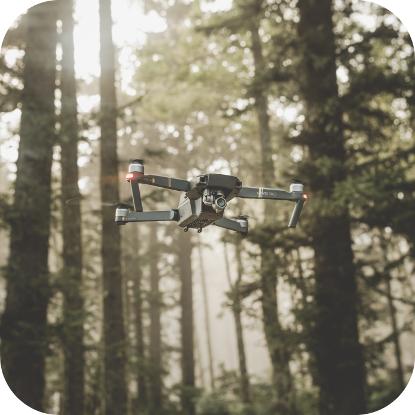
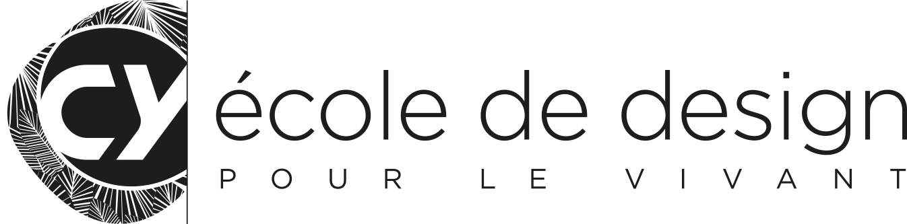
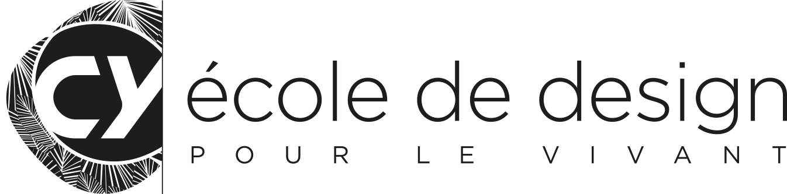

/* Bonjour, je m’appelle Matthys Tachon-Panafieu. Je suis en 4ème année du double cursus ingénieur informatique et designer global à CY Ecole de Design. A travers ce portfolio je vais vous faire vivre l’expérience de l’alliance entre l’informatique et le design. Bonne découverte ;) */
Lors de ce projet nous devions concevoir le jeu du 2048 avec le language de programmation python et de la librairie tkinter. Le principe du 2048 est de faire fusionner les mêmes nombre entre eu dans un tableau 4x4 avec un système de gravité que le joueur controle. Pendant ce projet nous avons décidés d’augmenter la dificulté en proposant plusieurs modes en plus du 2048 clasique. Nous avons donc ajouté un mode multijoueur, un mode 16x16 et nous avons rajouté un dark mode pour améliorer la personalisation de son 2048.
defproject_2():
Titre du projet: Desolate Space
Collaborateurs: - Benjamin Corral - Ariana Sauvan
Lors de ce projet nous devions concevoir un jeu de survie et de terraformation sur une autre planète. Le jeu devais pouvoir etre joué depuis le web sur une page internet. Le but de ce jeu est de récupérer des ressources pour pouvoir créer des objetts aidant à la survie tout en augmentant l’indice de terraformation avec le temps ou à l’aide d’objets. Nous avons utilisé 3 languages informatiques qui sont : le HTML, le CSS et le JavaScript. Si vous souhaitez consulter le jeu il est disponible ici
defproject_3():
Titre du projet: Next Gen
Collaborateurs: - Theo Petitimbert - Anaïs Vanderplaetsen
Lors de ce projet nous avons travaillés en partenaria avec Trashback sur la question de comment agir sur les déchets dans la nature. Trashbak est une entreprise qui a conçu une application incitant tout un chacun à récolter des déchets dans l'environnement urbain en promettant des gratifications pour chaque déchets déposés dans les poubelles. Nous avons voulu améliorer cette application pour la rendre plus ludique. Nous avons donc modifié l'interface et l'expérience utilisateur en simplifiant son utilisation tout en ajoutant un certain nombre de nouvelles fonctionnalités utiles.
defproject_4():
Titre du projet: Caméra Sauveuse

Collaborateurs: - Benjamin Corral - Ariana Sauvan
Lors de ce projet nous avons travaillés en partenariat avec Mobotix pour penser une nouvelle utilisation futur de leurs caméras qui sont à la pointe de la technologie, combinant l'analyse d'image (grâce à l'IA) et les différentes visions (normal, thermique...). Nous avons donc pensés à utiliser leurs caméras dans des situations de danger. Nous avons choisi le sujet des catastrophes, des risques et des menaces avant de se spécialiser sur les feux de forêts. Notre idées finales étant de mettre en place une surveillance accru et efficace de zones prédéterminées qui serais à risque, ainsi que d'aider à l'évacuation de la zone si un danger à été détecté.
 
